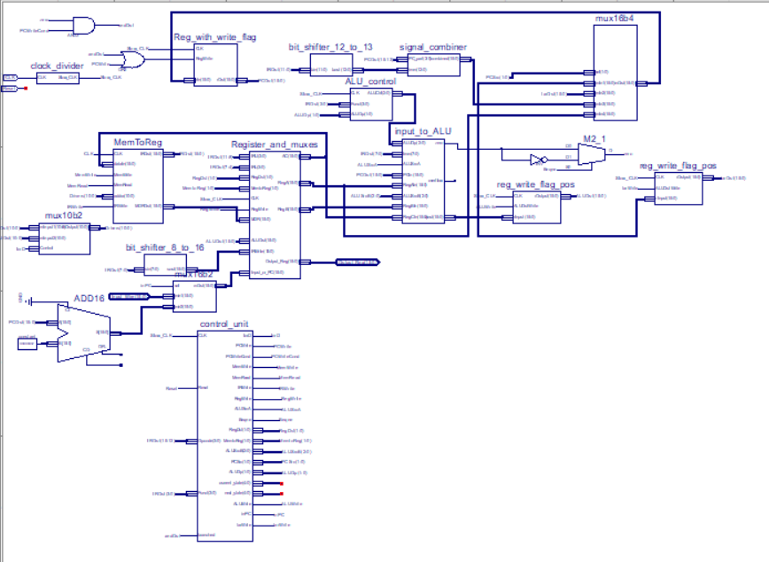
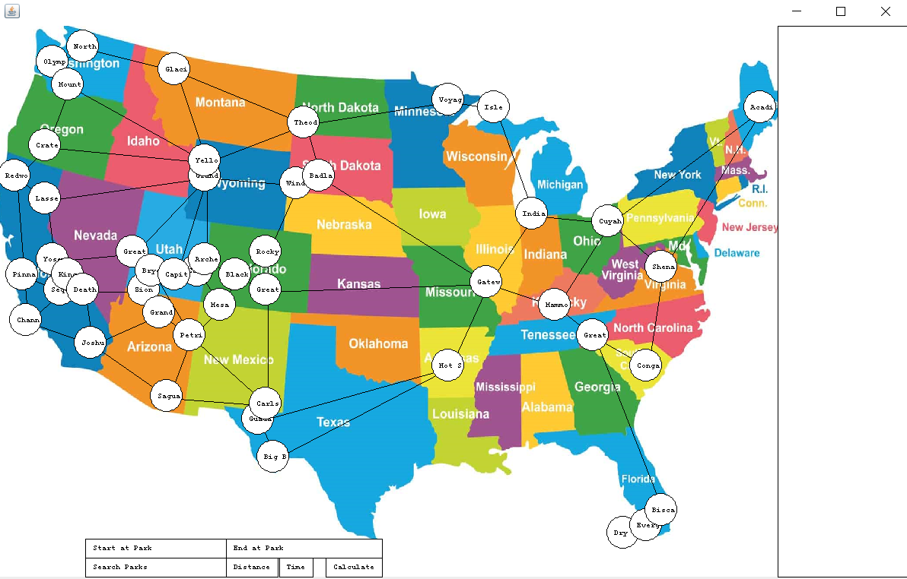
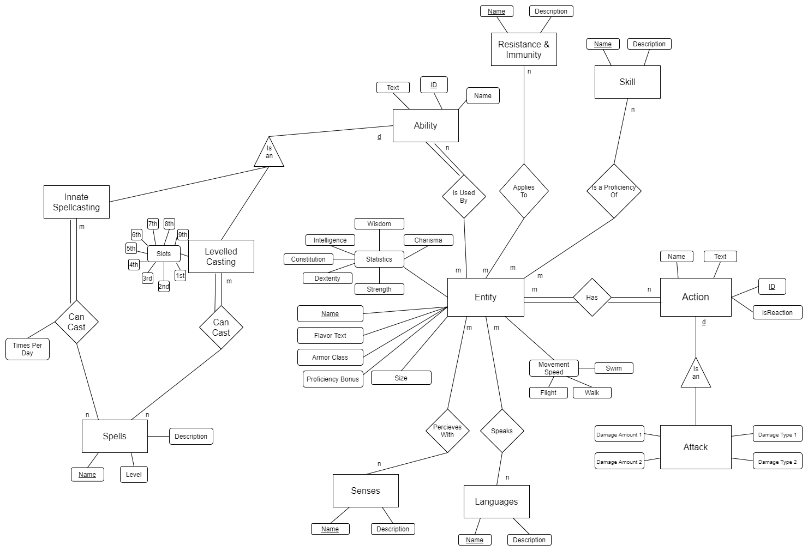
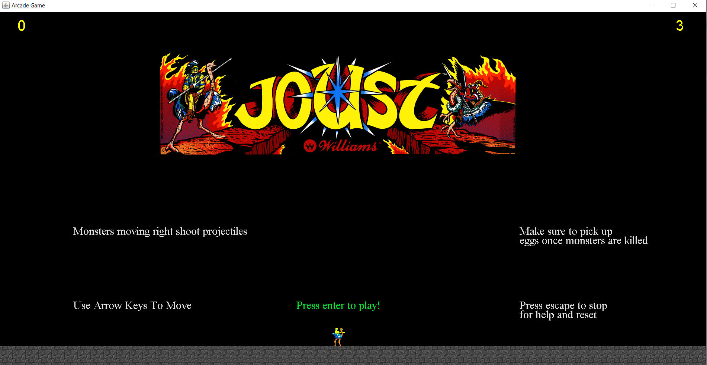

Portfolio
Shown below are the projects I have created throughout my time as a student at the Rose-Hulman Institute of Technology. They display my propensity for group-based work as well as my proficiency in a variety of material.
-
Processor Development Project
For this project, I worked with a team to write an assembly language to be implemented on a processor designed through the Xilinx IDE. I acquired experience in constructing design documents, writing a final report, and taking succinct and comprehensive meeting minutes. I also worked with the team to craft a presentation given about the design process and the overall fundamentals of our processor.
-
National Park Route Creator
In this project, I collaborated with a team to implement Dijkstra's Algorithm to compute the shortest path between any two national parks in the continental United States. I coordinated complicated schedules during the confusion at the beginning of the pandemic to have sufficient time to meet as a team. I specifically handled the graphic design of the UI, building the program up from a bare-bones algorithm.
-
Database Development Project
In the Database Development Project, I, alongside a team, constructed a database through SQL Server Management Studio to store the information contained within the Dungeons and Dragons 5th Edition Monster Manual. This involved storing data that described each creature throughout related tables. We constructed a Java program to connect to the database and a User Interface where one could view the information stored within the database and modify the information contained depending on permissions. We also created a design document for this project that included an Entity Relationship diagram as well as a Relational Schema.
-
Arcade Game Project
In this project, I worked with a partner to program the 1982 arcade game Joust through a Java swing environment. This project dealt with entity tracking and graphical changes that followed algorithmically supported changes at a consistent movement rate. I compiled a comprehensive presentation detailing the design issues with the project as well as the overall process and final product.